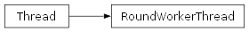

groupbuilder.algorithm_thread.RoundWorkerThread
- class groupbuilder.algorithm_thread.RoundWorkerThread(parent, config)[source]
A worker thread that generates group assignment rounds in the background.
This thread handles the execution of the grouping algorithm while allowing the main UI thread to remain responsive. It supports pausing, resuming, and stopping the generation process.
__init__(parent, config)Initialize the round worker thread.
run()Main execution method of the thread.
pause()Pause the generation process.
resume()Resume the generation process.
stop()Stop the generation process.
- __init__(parent, config)[source]
Initialize the round worker thread.
- Parameters:
parent (object) – The parent object that will receive callback notifications.
config (GroupConfig) – Configuration settings for the grouping algorithm.
Methods
__init__(parent, config)Initialize the round worker thread.
getName()Return a string used for identification purposes only.
isDaemon()Return whether this thread is a daemon.
is_alive()Return whether the thread is alive.
join([timeout])Wait until the thread terminates.
pause()Pause the generation process.
resume()Resume the generation process.
run()Main execution method of the thread.
setDaemon(daemonic)Set whether this thread is a daemon.
setName(name)Set the name string for this thread.
start()Start the thread's activity.
stop()Stop the generation process.
Attributes
daemonA boolean value indicating whether this thread is a daemon thread.
identThread identifier of this thread or None if it has not been started.
nameA string used for identification purposes only.
native_idNative integral thread ID of this thread, or None if it has not been started.